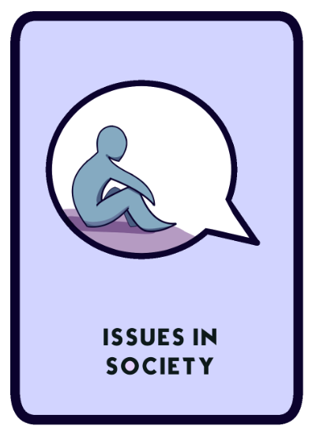

Stress is very prevalent in students, especially those of the Philippine Science High School System. Here are some of the many causes of stress in teenagers and adolescents:
Schools want students to be prepared for the future, but sometimes this "becoming prepared" gives students a hard time. Many students pull all-nighters just to finish the heavy load of requirements which frequently is too much to handle. Additionally, many students feel pressured by friends and family to do well in school, which just adds on to the stress they experience in their day-to-day lives.

There are teenagers who feel unloved or alone in their local community, such as their high school, their hometown, or even their family. Adolescence is also the point where many students go to college, which brings them into a brand new pond. Many freshmen might feel isolated or alone in these situations too.
Many teenagers have financial problems which lead them to work part-time for the family. This gives them more things to worry about, and subsequently more stress. Many teenagers also have broken families or have parents that are ongoing separation/divorce. These events may swing their emotions by a huge factor or make them a lot more stressed.